| 日付 | 2016年10月16日（日） |
|---|---|
| 山域 | 高尾周辺 |
| メンバー | 友人（男2女3子供4） |
| 山行形態 | 子連れ日帰り |
| アクセス | 電車、リフト、バス |
| ルート (Map) | リフト山上駅 (9:38) - (10:47) 高尾山 (11:09) - (11:39) 一丁平 (11:52) - (12:09) 城山 (13:17) - (13:32) 小仏峠 (13:45) - (14:34) 小仏 |
妻の友人家族と一緒に山に行くことにする。
山は初めて、車は無し、子連れということで行ける山はかなり限られる。
無難なところで高尾山を選択したが、高尾山だけではつまらないので、
城山まで縦走してみることにする。
高尾山駅集合の予定だが、住んでいる場所がほとんど同じなので、
電車で顔を合わせてそのまま合流。
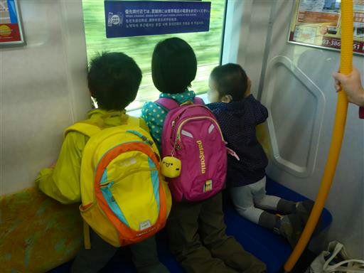
高尾山駅で電車を降りて、しばらく歩くとケーブルカー駅に到着する。
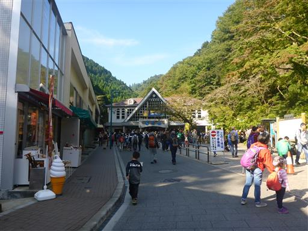
高尾山はケーブルカーとリフトで上まで行ける。
子供達に聞いてみたところ、皆リフトが良いと言うのでリフトに決定。
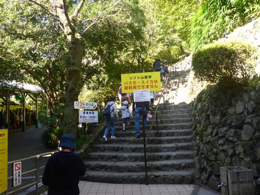
リフトは待ち時間が無いのかと思いきや、案外人が並んでいる。
回転は早いが10分程度待たされる。
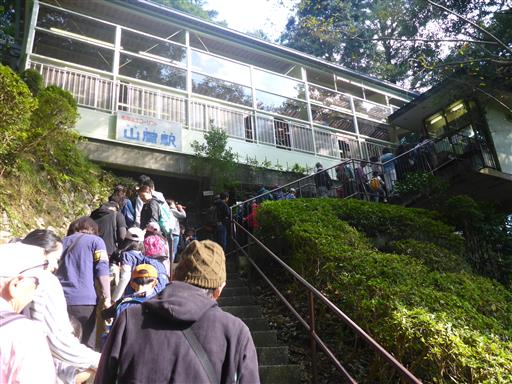
先週の落とし物ランキング。皆、結構高価なものを落している。
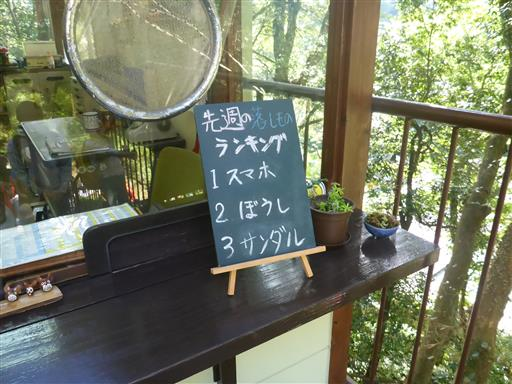
ドングリでつくったトトロ。可愛らしい。
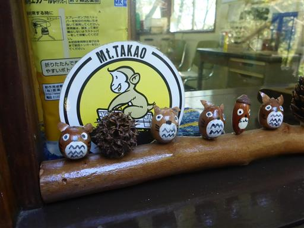
リフト乗り場に到着。リフトは次々やって来る。
乗り場はベルトコンベアになっていて乗りやすいようになっている。
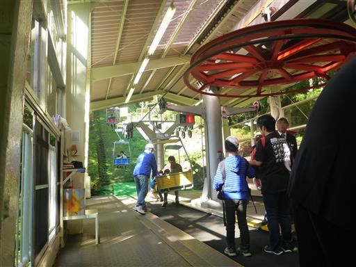
カラフルなリフト。娘は「赤青黄赤青黄・・・」と呟いていて、法則性をつかんでいるようだ。
この時間だとさすがに下りてくる人はほとんどいない。
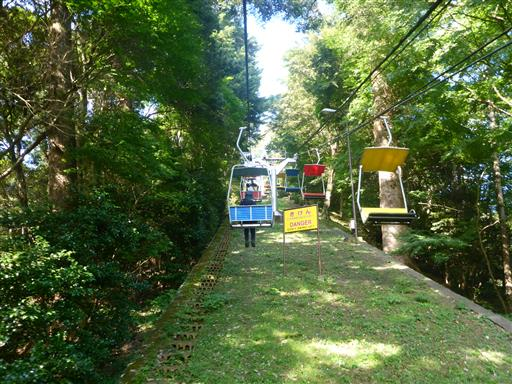
山上駅でリフトを下りて全員集合したら歩き始める。
リフトはケーブルカーよりも少し低い位置に到着する。標高462m。
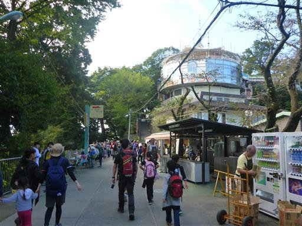
周囲にはタコ杉やマニ車のようなもの、売店など
子供の気を引くものがいっぱいあるため、なかなか前に進まない。
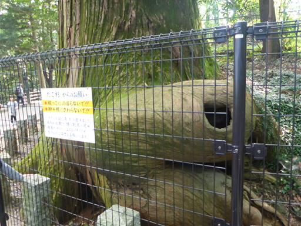
階段が現れようやく登りになる。子供達は段数を数えながら登っている。
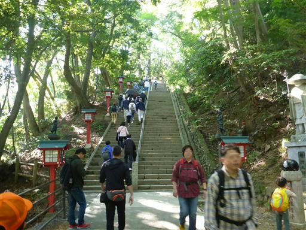
門を潜る。息子はぐずつき出しているが、年長3人組は元気だ。
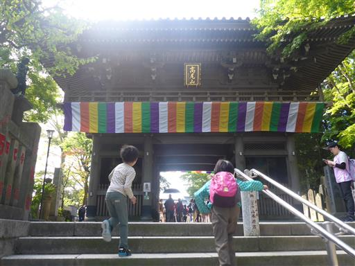
天狗注意の標識。道路標識に似せて作られている。
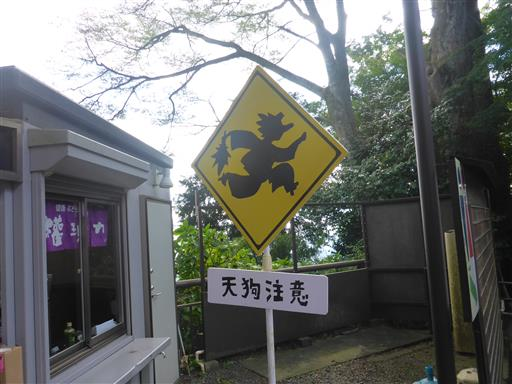
高尾山の山頂に到着する。標高599m。
予定より少し遅めだが、まあまあの時間に到着できた。

相変わらず山頂は大混雑。
昼食は城山でとる予定なので、ここではおやつ休憩にする。
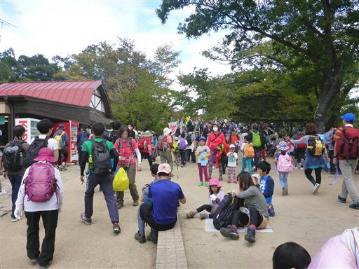
休憩を取ったら城山に向けて歩き出す。高尾山直下の広場も人が多い。
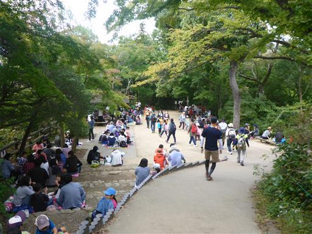
登山道からの景色。丹沢の山々は見えるが、残念ながら富士山は雲の中だ。
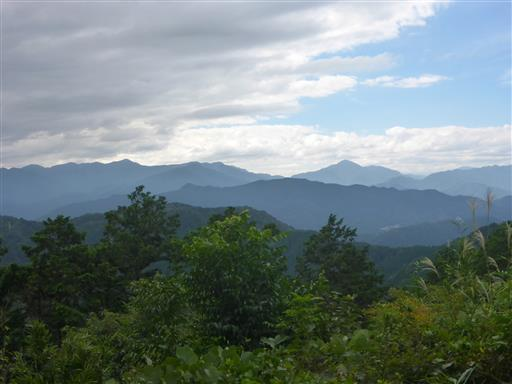
先行子供3人組が後ろから来る子を驚かすために隠れている。
走ったり、止まって何かを眺めたり、うろうろしたり、大人の倍は体を動かしてそうだ。
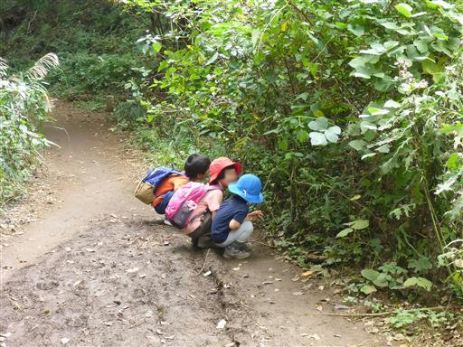
高尾山から離れると、ようやく登山道は静かになってくる。
息子は最初こそぐずぐず言っていたが、その後は頑張って付いて行っている。
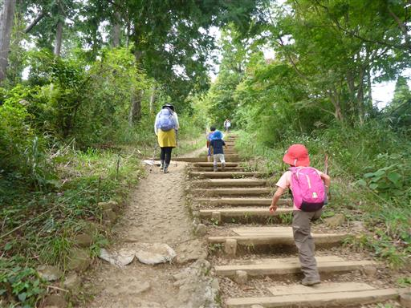
一丁平の展望台に到着。ここも鈍い展望だ。
子供達は小さなおもちゃの凧を取り出して走り回っている。
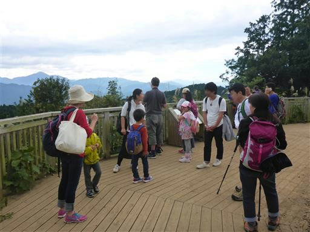
城山まであともう少し。
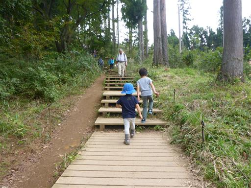
城山山頂に到着する。標高670m。ここに来るのは久しぶりだ。
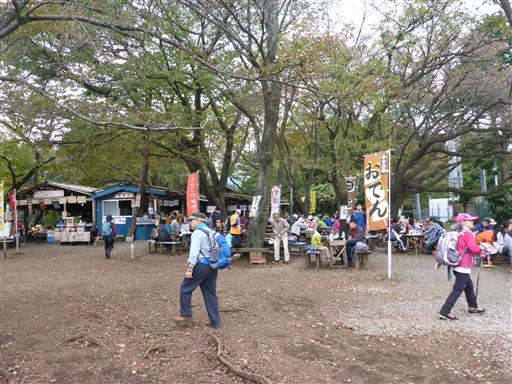
混雑する山頂から少し下った広場で昼食をとる。
昼食を取ったら子供達は山頂で走り回って遊んでいる。息子はみそっかすだ。
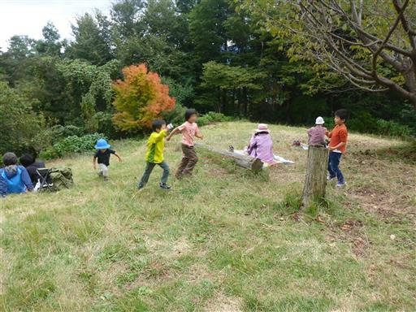
山頂でのんびりしたら下山開始。平らなところは走って下っている。
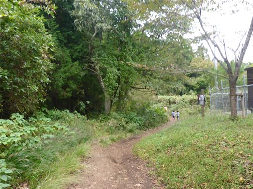
小仏峠に到着。少々陰気な峠だ。
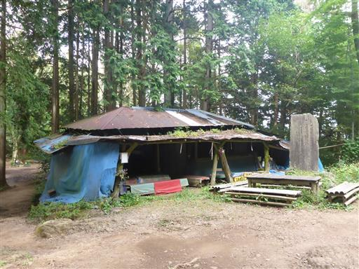
ここから小仏バス停にむけて沢沿いの道を下って行く。
もう終盤だが子供達はまだまだ元気だ。
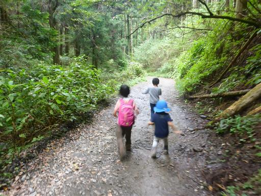
下山して車道に到着した直後に雨が降ってきた。予報では曇りだったのだが…
雨脚は強かったが、カッパを出して着たらすぐ止んでしまった。
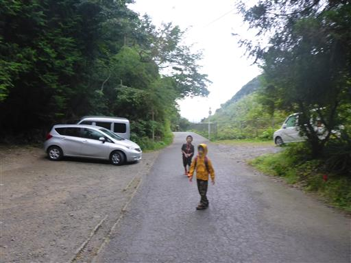
車道をしばらく歩いて小仏バス停に到着する。標高290m。
全員無事下山できてほっと一息。息子は最初から最後まで歩き切った。
久々のグループ登山は結構楽しかった。子供達が集まると、計画を立てるのは大変だが、
お互い刺激になるようで、家族だけの登山とはまた違った楽しみがありそうだ。
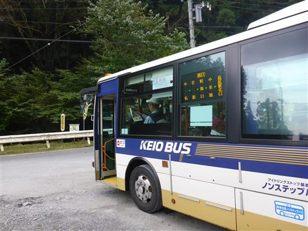